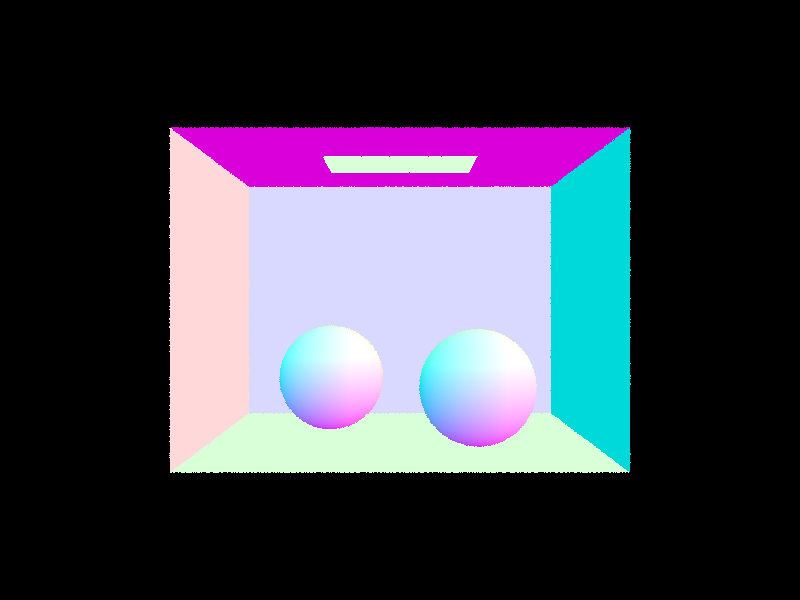

CS 184: Computer Graphics and Imaging, Spring 2023
Project 3: PathTracer
Riya Kumar and Mylinh Vu, CS184-rm
Overview
Part I: Ray Generation and Scene Intersection
Generating Pixel Samples for Banana
Generating Pixel Samples for CBEmpty
Rendering with Ray-Triangle Intersection

Rendering with Ray-Sphere Intersection
More Scene Rendering
Bunny Rendering